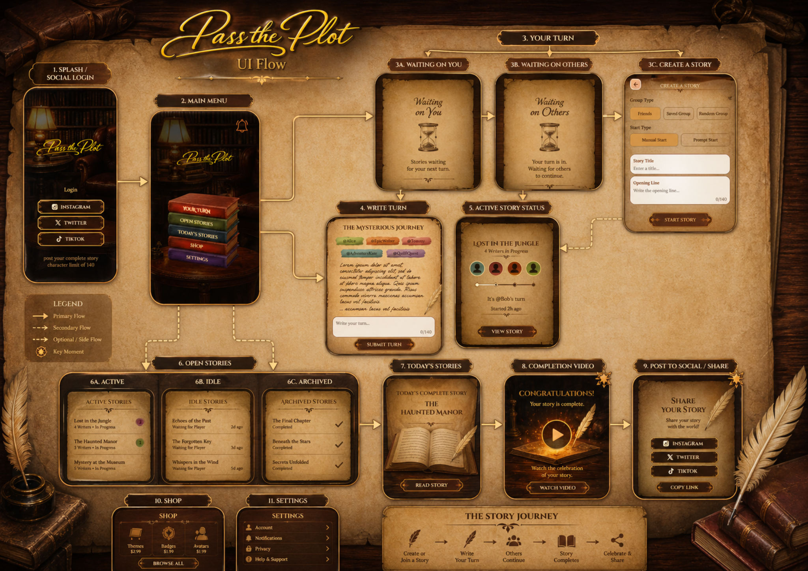

Concept
Players join or create a story, write their turn, wait for others, and eventually complete a shared story that can be read, celebrated, and posted socially.
Mobile App
A social storytelling party app where players take turns creating unpredictable, funny, dramatic, and shareable stories together.

Players join or create a story, write their turn, wait for others, and eventually complete a shared story that can be read, celebrated, and posted socially.
Currently in development under KB Studio LLC. Launch details, store links, and support resources will be added as the app moves closer to release.
Create collaborative stories with friends, saved groups, or random players.
Clear waiting states, story status, turn writing, and completed story experiences.
Designed for finished-story sharing and social content loops.
For questions about Pass The Plot, contact KB Studio 17 support.
Contact Support